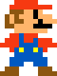
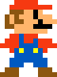

Favorites
My favorite characters are Pac-Man and Mario, I also like the Bugdroid mascot.
 
droid.gemdation.com
sandbox.gemdation.com
q.gemdation.com
Gem's Sandbox Discord server is looking for members everyday! Join if you like casual games, memes, brainrot, etc. If you have joined other Nintendo homebrew servers, there is a chance you might like this one.
Familiar with Angry Grandpa, GradeAUnderA, and Plainrock124? Those people used to be my TV when I was younger.
Nowadays, my most watched YouTubers are Ashens, Michael MJD, and probably some others too.
I have various electronics, my favorite being my AIO HP computer that
has been primarily used to watch videos, play games, and code this site!
I believe I have had the computer since 2020, it has been my window to the internet.
My favorite characters are Pac-Man and Mario, I also like the Bugdroid mascot.
 
I prefer the 'casual' side of video games, as anything else will likely lead to a disaster.
My favorite game is Pac-Man Championship Edition DX+ because
it was the first game that I could play and fully finish!
I own five Nintendo consoles, the Switch, Wii, DSi, Wii U, and 3DS.
Excluding the Switch, all consoles are homebrewed!
I like the seventh and eight generation of consoles and some extra things too, like the PS2.
I have not really been in TV shows and movies, however I have watched a lot of cartoons!
Big shoutout to The Amazing World of Gumball and SpongeBob SquarePants.
My first experience in mainstream music was the Hot Pink album by Doja Cat back in 2020.
It was a huge discovery for my music, that at the time was YouTuber stuff.
My music library also extends to R&B and tiny bits of country, future funk, and vocaloid.